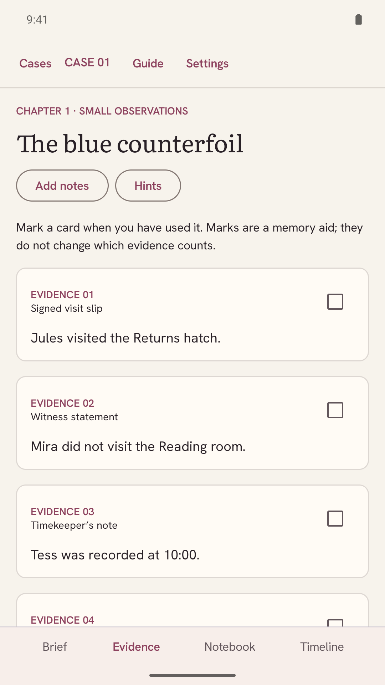
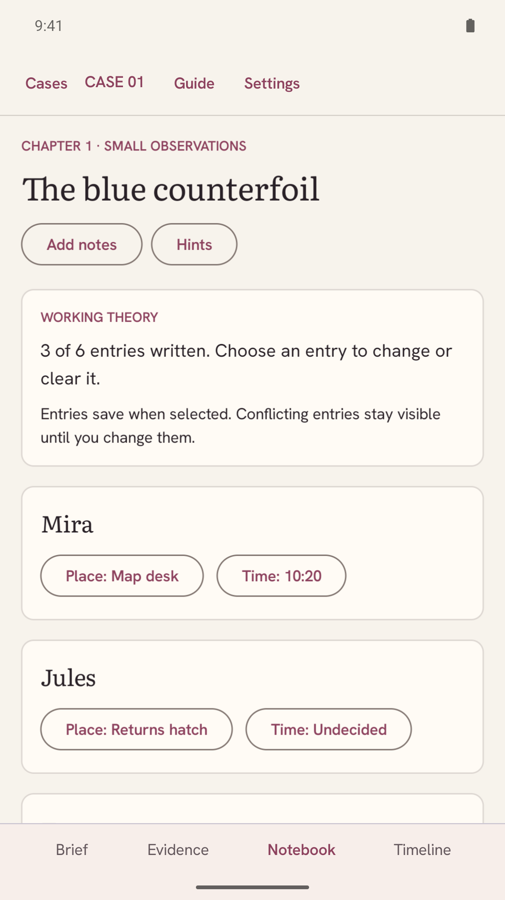
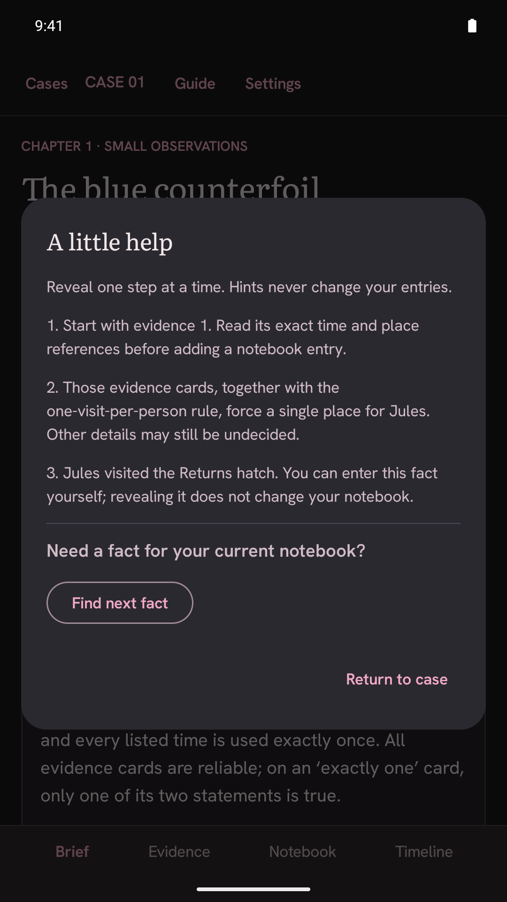

Every detail
has a place.
Thirty original deduction cases. Connect witnesses, places and timelines to find the one account that fits.
Explore the casesSmall mysteries.
Careful deductions.
A ribbon repaired before rehearsal. A lantern delivered at noon. Each case begins with a quiet question and a handful of reliable clues.
Small observations Six cases
Three visitors introduce the notebook. Match each person to a place and time, then recover a missing name.
Following the visits Six cases
Place-based clues follow the person who visited that place. Neighboring times and measured gaps make new connections.
Between the lines Six cases
Two possible places, two possible times. Combine alternatives until only one complete account remains.
Two accounts Six cases
Some cards contain two statements, exactly one of which is true. Follow what each possibility implies.
The final thread Six cases
Five visitors and overlapping clues bring the collection to its most involved deductions. Every case is open from the start.
Keep your own theory.
Mark evidence, write notes and assign each visit. Check for contradictions when you choose.

Your notebook stays yours. Conflicting entries remain visible until you change them.
The timeline turns those entries into a chronology. A check points out duplicate places, repeated times and evidence that cannot fit.

A nudge,
when you need it.
Three progressive hints reveal a starting point, a useful connection and a forced fact. Nothing fills itself in.
Finished a case? Read its answer, full timeline and an evidence-based deduction path.

The complete casebook.
All thirty cases, every hint and every explanation. One purchase, with no ads, accounts or subscriptions.
Release testing is in progress. Not yet available to buy.
UK £3.49
India ₹149
Before you open a case
Does Caseweave need internet?
Cases, checks, hints, saves and notebook backups work offline. Buying and downloading the app uses Google Play. Support and privacy links open your browser.
Will my notes survive a phone change?
Export notebooks in Settings, move the ZIP file yourself, then restore it on the other phone. It includes saved notes, entries, marks, hints and completed cases. Display and sound preferences stay on each device. Backups are not encrypted.
Are cases timed?
No. The listed times are evidence inside each story. You can investigate at your own pace, in either theme, with large text and optional sound and haptics.
How do the cases reach one answer?
Each person, place and listed time appears once. Every published case has one complete assignment that satisfies its evidence. Explanations cite the cards supporting each deduction.